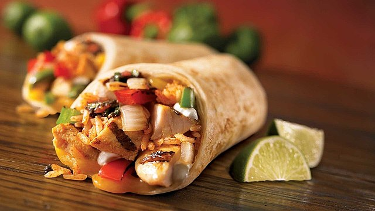

A burrito is a dish in Mexican and Tex-Mex cuisine that took form in Mexican cuisine
The burrito consists of a flour tortilla wrapped into a sealed cylindrical shape around various ingredients.
The tortilla is sometimes lightly grilled or steamed to soften it, make it more pliable, and allow it to adhere to itself
Burritos are often eaten by hand, as their tight wrapping keeps the ingredients together. Burritos can also be served "wet", i.e.,
covered in a savory and spicy sauce, when they would be eaten with a fork and knife.
Burritos are filled with savory ingredients, most often a meat such as:
beef, chicken, or pork, and often include other ingredients, such as rice,
cooked beans (either whole or refried), vegetables, such as lettuce and tomatoes, cheese,
and condiments such as salsa, pico de gallo, guacamole, or crema.
Ingredients:
- 1 lb. lean ground beef
- Rice
- 1 (1 ounce) packet taco seasoning mix
- 1 ½ cups refried beans (or 1 ½ cups drained and rinsed black beans)
- ¾ cup corn kernels
- 3 cups cooked rice (I like to use Uncle Ben's microwaveable Ready Rice for a quick option)
- 6 large (10-inch) flour tortillas (I like to use Mission brand "burrito size" tortillas)
- 1 ½ cups shredded cheddar cheese
- Optional garnish: finely diced red onion; lettuce; diced tomato or salsa; sour cream; fresh cilantro;
avocado or guacamole
Steps:
- Preheat oven to 350° F. Spray 9 x 13-inch baking dish with cooking spray and set aside.
- Cook beef with taco seasoning mix, according to seasoning package instructions.
- To prepare 1 burrito: spread ¼ cup beans down center of tortillas; top with ½ cup rice,
beef, 2 tablespoons corn, and ¼ cup cheese.
- Fold in opposite sides of each tortilla, then roll up, burrito style. Place, seam-sides down, in prepared dish.
Repeat with remaining ingredients to prepare 6 total burritos.
- Cover with foil and bake for 25 minutes (until heated through).
If you are baking the burritos from the refrigerator while they're still cold,
it will take about 30-35 minutes for them to heat through.